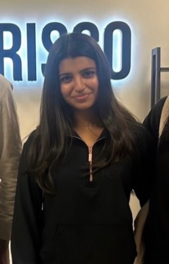
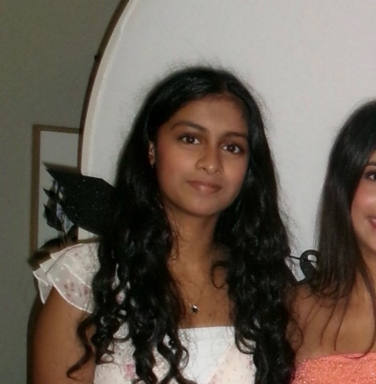
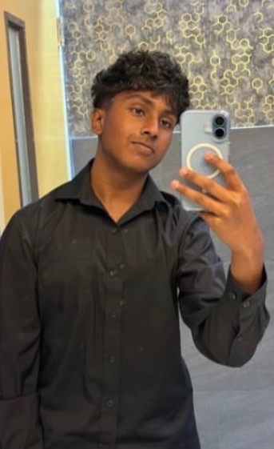
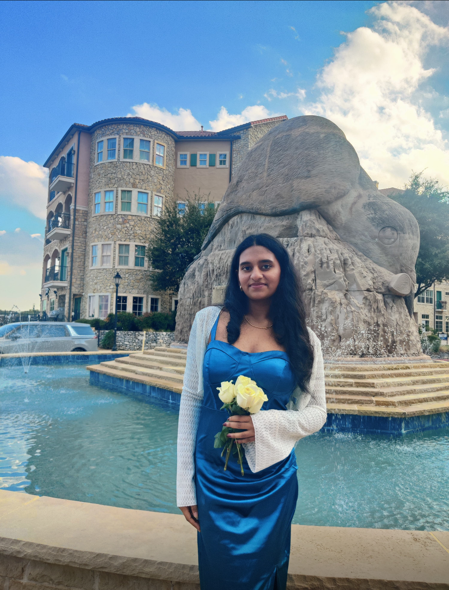
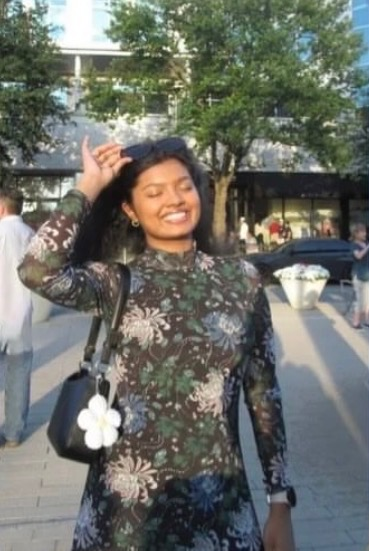
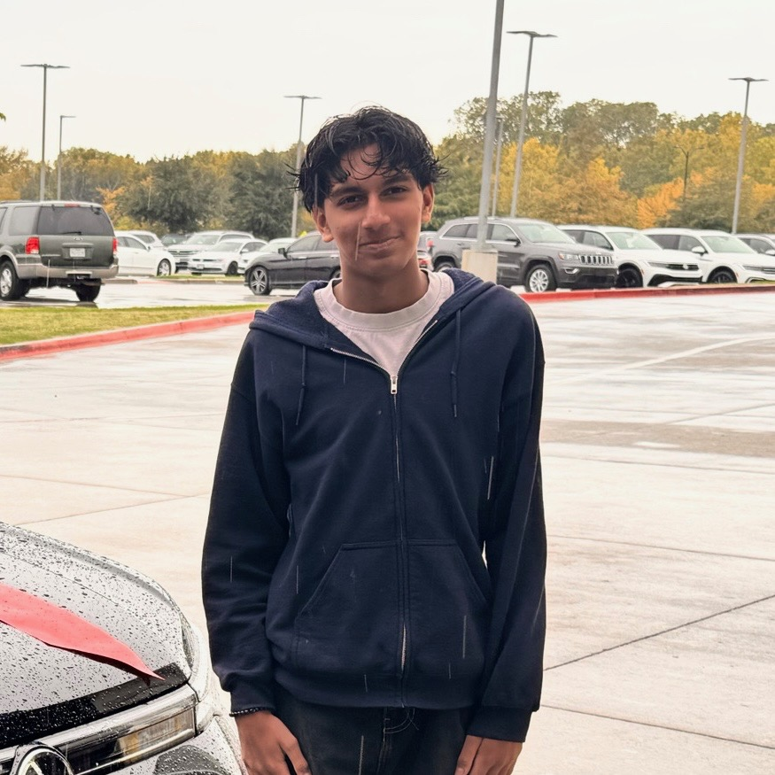
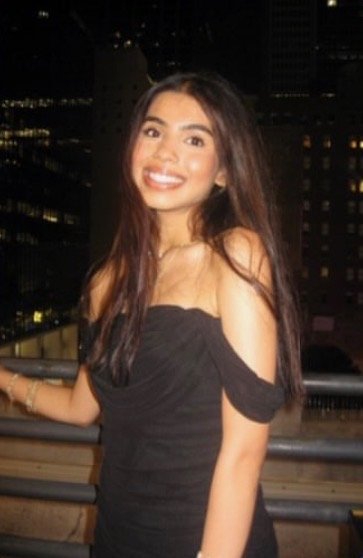

Officers
The students who keep The Medical Minute running, one post at a time.
Sai Pulletikurthi
President

Esha Jalindre
Vice President

Ashi Penmatcha
Secretary
Thanvi Balebail
Treasurer

Venkata Pentapatti (Nikki)
Social Media Manager

Lucky Kadari (Sahasra)
Social Media Manager

Aariyana Alam (Aari)
Outreach Coordinator Manager

Anjaneya Narayan
Outreach Coordinator

Sanvi Channamallu
Outreach Coordinator
@themedicalminute · New post every day